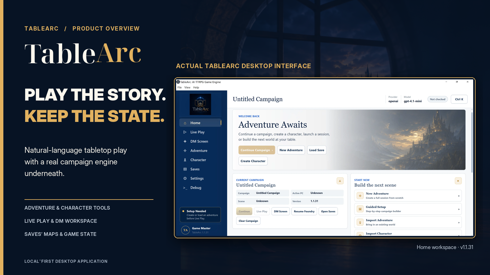
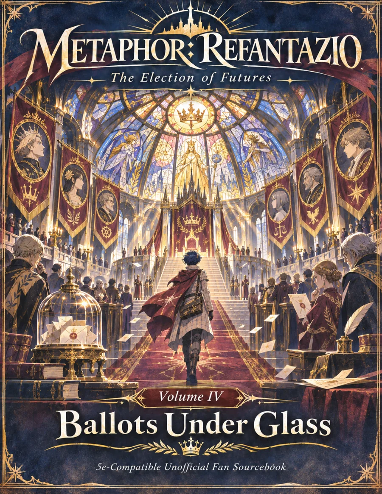
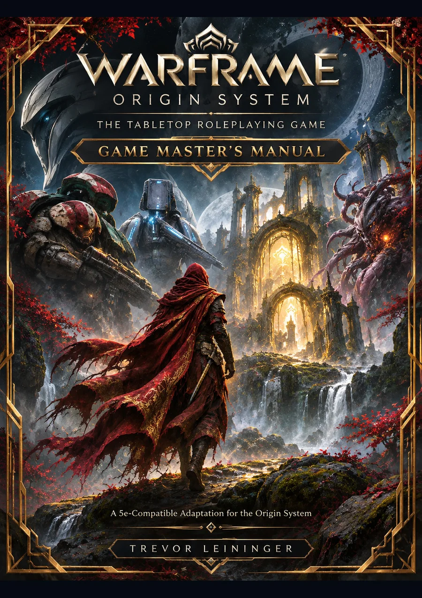

01 / GREENKAPPA INTERACTIVE
GreenKappa Labs / Featured projects
Explore desktop RPG software, original card games, tabletop sourcebooks, adventures, and tools for creators.

01 / GREENKAPPA INTERACTIVE
Swipe left or right to browse featured projects
Seven featured studio projects · Development concepts, illustrated sourcebooks, and prototypes · Not all projects are available for download or purchase
RPG software and playable systems built around agency, memory, persistent state and meaningful consequences.
TABLEARC / LOCAL-FIRST RPG ENGINE
Natural-language tabletop play with structured campaign state, rules procedures, maps and persistent saves.

TABLEARC RED / STANDALONE RPG SOFTWARE
Built for Cyberpunk RED gigs, Netrunning, tactical combat and continuing campaign consequences.
Original strategy and party games about deduction, exploration, negotiation and delightful trouble.
Each game has its own rules, visual identity, and reason to get everyone around a table.

Build a house from rooms that won't stay put. Follow shifting passages, solve the layout, and find a way out before the house changes again.
Explore this gamePlay petty deities with enormous appetites. Grant miracles, negotiate binding covenants, and make sure somebody pays for every favor.
Explore this game
One agent has a job to finish. Everyone at the table gets in its way. A party game built around interference, surprises, and controlled chaos.
Explore this gameOriginal adventures take the lead, followed by a Control-focused library of illustrated sourcebooks and other unofficial tabletop adaptations.
Lead with the original mystery of The Records House, followed by the Control-inspired Dead Air and two further campaign modules.
 02 / Control-inspired paranormal procedural
Dead Air: The Unanswered Line
A four-session paranormal procedural about missing voices and a telephone anomaly
Explore adventure
02 / Control-inspired paranormal procedural
Dead Air: The Unanswered Line
A four-session paranormal procedural about missing voices and a telephone anomaly
Explore adventure

03 / Metaphor-inspired linked campaign Ballots Under Glass Three linked Metaphor-inspired political adventures for levels 3–9 Explore adventure
04 / Warframe mission · GM manual cover The Silent Auction A starter Warframe operation with encounter material and GM/player maps Explore adventure 01 / FEATURED SOURCEBOOK · CONTROL
The Oldest House
The most extensively developed licensed-world collection · Paranatural investigations, field operations, and anomalous casework
01 / FEATURED SOURCEBOOK · CONTROL
The Oldest House
The most extensively developed licensed-world collection · Paranatural investigations, field operations, and anomalous casework
 02 / SOURCEBOOK COLLECTION
The Supergiant Collection
Six volumes, including The Echoes Table
02 / SOURCEBOOK COLLECTION
The Supergiant Collection
Six volumes, including The Echoes Table
 03 / SOURCEBOOK COLLECTION
The Cosmic Wheel Codex
Tarot magic, witchcraft, and authored fate
03 / SOURCEBOOK COLLECTION
The Cosmic Wheel Codex
Tarot magic, witchcraft, and authored fate
 04 / SOURCEBOOK COLLECTION
The Election of Futures
A Metaphor-inspired fifth-edition compendium
04 / SOURCEBOOK COLLECTION
The Election of Futures
A Metaphor-inspired fifth-edition compendium
 05 / SOURCEBOOK COLLECTION
Warframe: Origin System
Tenno, missions and a fifth-edition field guide
05 / SOURCEBOOK COLLECTION
Warframe: Origin System
Tenno, missions and a fifth-edition field guide
Explore The Records House first, then the Control-led sourcebook library and the remaining illustrated fan adaptations. Each project has its own development and rights notes.
Explore sourcebooks & adventuresUtilities for the workflows, evidence, assets, and knowledge behind creative and technical work.
Early product designs / Working names
New utility products for developers, authors, designers and independent creators. These concepts are in requirements and technical-design development; no public installers or launch dates are available.
Trace the connections between forms, flows, lists, and approvals before a change breaks something.
Dependency graphs · Failure paths · Impact analysisIn development / Architecture designConnect critical claims to evidence, track decisions through revisions, and identify contradictory documentation.
Source lineage · Change review · Decision ledgerIn development / Requirements designCatch card and sourcebook manufacturing problems while they are still cheap to fix.
Bleed & trim · Asset checks · Deck inventoryIn development / Preflight specificationsKeep characters, timelines, canon and rules aligned across long-running fiction and tabletop campaigns.
Canon boundaries · Continuity graph · Version historyIn development / System designHow the work is approached
A game should tell you what your decision changed. Software should do the same. The aim is to make both interesting to use and possible to examine.
Find out what someone is trying to do before designing another screen or adding another mechanic.
Define which part of a system can change the facts, and keep those changes visible.
Use real workflows, diagnostics, and accessibility checks—not just a convincing demo.
Capabilities
A useful product needs working code, an interface people understand, documentation they can use, and tests that catch failures.
Provider integrations, grounded generation, local models, structured outputs, and human-readable failure handling.
Responsive interfaces, desktop packaging, stateful workflows, maps, dashboards, and user-facing diagnostics.
Power Platform, SharePoint, Power Automate, operational tracking, forms, notifications, and process redesign.
Architecture plans, testing protocols, decision records, sourcebooks, presentations, and accessible reference material.
About the builder
An independent developer and designer working across applied AI, interactive software, and original tabletop games.
Current work spans GreenKappa Interactive (TableArc and TableArc RED), three original card games, illustrated GreenKappa Worlds sourcebooks and adventures, and early-stage utility concepts under GreenKappa Tools. The work ranges from structured RPG state to physical spatial puzzles and AI-assisted party games.
Contact
Interested in testing a game, collaborating on interactive software, or helping shape a GreenKappa Tools concept? Get in touch.